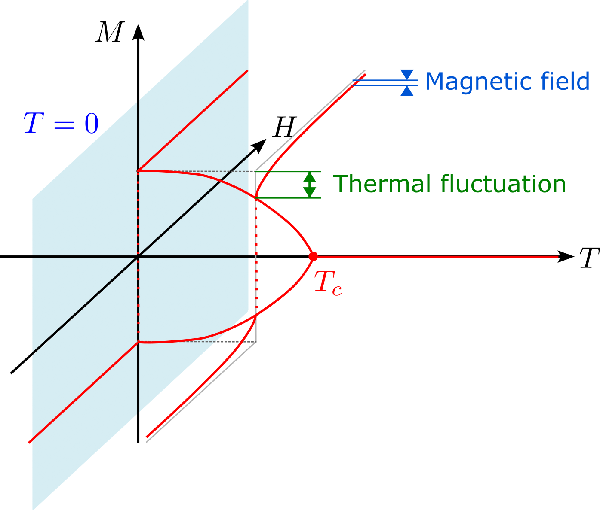

Ising models and spontaneous symmetry breaking
Contents
Ising models and spontaneous symmetry breaking#
The notion of spontaneous symmetry breaking is probably the most important non-trivial concept of statistical mechanics (I). It is related to various important phenomena in condensed matter physics, e.g. magnetism, liquid crystal, superconductivity, superfluidity, etc. Also, it plays important rule in the particle physics, e.g. Higgs mechanism, chiral symmetry breaking, etc. Once we grasp the idea of spontaneous symmetry breaking, we can not only understand above-mentioned phenomena but also the important Elitzur’s theorem which states “gauge symmetry” cannot be spontaneously broken.
The important concepts can be demonstrated by using Ising models, so let’s start from the introduction of the Ising model. The formal definition of Ising model is
Here \(J_{i,j}\) is the exchange coupling between the spins on site \(i\) and site \(j\). \(H_i\) is the magnetic field coupled with the spin on site \(i\). Ising model is used to study various different phenomena. Therefore, we made several remarks about the model.
Classical Ising model and quantum Ising model are different. For classical Ising model the dynamical variable is the binary number 0/1 or spin up or down. In the later discussion, we will use \(S_i=\{+1,-1\}\). The dynamical variable of the quantum Ising model is described by a state in the q-bit Hilbert space. Since the system has multiple q-bits, the wave function of the quantum Ising model is a many-body wave function in the \(2^N\) dimensional Hilbert space.
\(J_{ij}<0\) is usually called the ferromagnetic coupling because the classical spins prefer to align with each other. \(J_{ij}>0\) is usually called the anti-ferromagnetic coupling be cause the spins prefer to anti-align with each other in this case. The anti-ferromagnetic coupling could lead to interesting phenomena such as frustration.
\(J_{ij}\) decays as \(|i-j|\) increases. If it decays exponentially, there is a length scale where the spins are effectively decoupled. In that case we said the interaction is short-ranged or finite-ranged. Sometimes, the coupling decays slower in a power law fashion. We describe those systems as long-ranged coupled systems. Such scenario happens in trapped ion experiments. Sometimes, we will encounter the interaction that does not decay as a function of distance. Usually, they are theoretical idealization for the analytic approach. The thermodynamic limit of such system should be treated carefully.
The coupling \(J_{ij}\) could also be a random number. Such model is used to model the disorder effects.
The spins could be defined on various lattices
Hypercubic lattice: the nearest-neighbors of a lattice site sits at the direction along and against the unit vector of each direction. For a D dimensional hypercubic lattice, there will be 2D nearest neighbors for each site.
Triangular lattice: When we consider anti-ferromagnetic coupling on a triangular lattice, one can show the phenomena of frustration. The term simply means the three bonds of a triangular plaquette cannot minimize its energy simultaneously. Frustration plays an important role in the study of spin liquids and spin glasses.
For our later discussion, we focus on the simplest case: the ferromagnetic Ising model on hypercubic lattice with nearest-neighbor coupling, \(\langle i,j\rangle\) means the pair \(i,j\) are nearest-neighbors.
The phase diagram of ferromagnetic Ising model on hypercubic lattice (heuristic arguments)#
We want to use the Ising model to study phases and phase transition. Could we argue that the model should show at least two phases? We can derive the partition function as
Here,
Let’s think in terms of the Helmholtz free energy \(F=E-TS\). We can start from the simple case \(h=0\) and ask whether there are some non-trivial phases? At the \(T\to\infty\) limit, we have entropy dominates the free energy and the system prefer to maximize the entropy by randomly orient the spins. At the \(T\to0\) limit, the free energy is dominated by the energy of the system. We expect the system try to organize the spins such that the Ising term is minimized. From the expression, we can easily see the lowest energy corresponds to the case when all the spins are aligned upward or downward. From the simple argument above, we can already see there must be some different collective behavior at different temperature range.
The above argument not only suggest there is a possible spin order at the low temperature phase. Another question is: which one? Especially when \(h=0\), we can notice the system is invariant under the operation \(\{S_i\}\to\{-S_i\}\). When the Hamiltonian of a system is invariant under a physical operation, we said the system has a symmetry. In this case, we said the Ising model has a \(Z_2\) symmetry or the Ising symmetry.
One interesting question to ask is: If the Hamiltonian of a system has a specific symmetry. Will the statistical behavior of that system respects the symmetry? For our specific problem, we are asking: will the system pick the phase with magnetization \(M>0\) (or \(M<0\)) configuration at low temperature? i.e. the statistical behavior of the system breaks that symmetry spontaneously. Or they will have 50% of spin up and 50% spin down and end up with \(M=0\)? i.e. the statistical behavior of the system respect the \(Z_2\) symmetry?
It turns out, the model will choose between the \(M>0\) or the \(M<0\) configuration. That is, the symmetry is broken spontaneously.
Definition: Spontaneous symmetry breaking (SSB)
When the Hamiltonian of the system has a particular symmetry but the statistical behavior of the system breaks that symmetry. We said the symmetry is broken spontaneously.
How is it possible? How the symmetry is broken? We will address this issue several times later. We will take two approaches to understand this phenomena. First approach is from the analytic behavior of the free energy density at the thermodynamic limit. The second approach is from the non-trivial structure of phase space at the thermodynamic limit. Both approach demonstrate the importance of thermodynamic limit. Before discussing these approach. We will circle back to the question on how phase transition happened in the Ising model.
How can phase transition happened?#
The zeroth order question: can we understand why the system decide to change the pattern of their collective behavior in principle?
When \(h=0\), we have
Here, \(\{E_i(K)\}\) is the spectrum of the Hamiltonian at coupling constant \(K\). For finite \(N(\Omega)\), every Boltzmann factor is analytic function in \(K\). Sum over finite analytic functions will give us an analytic function. Therefore, we expect the partition function and the free energy for finite system to be analytic in \(K\). The collective behavior at different \(K\) should be qualitatively the same, and there is no phase transition at finite system. From this observation, we should conclude that phase transition can only happen when \(N(\Omega)\to\infty\). To get non-analytic function from the sum of analytic functions, the summation must be an infinite series. The argument is almost correct. We will use more detailed calculation to show that later. Before doing the more involved calculation, let’s develop a heuristic argument about the phase diagram of the Ising model.
The zero temperature phase diagram#
There is actually another possibility that we can create non-analytic behavior from the partition function of a finite system. The price we paid is to go to the quite special \(T=0\) limit.
When \(\beta\to\infty\), we know only the configuration with minimum energy will dominate the partition function.
The minimization function is not an analytic function in general. When we have two energy levels crossing each other, the dominated pattern of collective behavior swaps! Such phenomena is called level crossing. It is one possible mechanism for the zero temperature phase transition. The important features of this zero temperature phase transition are
It does not rely on the thermodynamic limit \(N(\omega)\to\infty\).
It does not care about the dimensionality of the system. The mechanism cares about the energy specturm only.
We can therefore construct our understanding of the zero temperature phase diagram along the coupling constant \(h\). When \(h>0\), the system prefers the \(M>0\) configurations. When \(h<0\), the system prefers the \(M<0\) configurations. When \(h=0\), the level crossing happens and we have our zero temperature phase transition.
How the above picture changes when we are at non-zero but low temperature region? We will further discuss the stability of the corresponding \(M>0\) and \(M<0\) configurations. Withou loosing generality, we will focus on the physics with \(M>0\).
The finite temperature phase diagram#
Now we know the zero temperature phase diagram. We want to ask the effect of finite temperature. Or, sometimes, we refer to the thermal fluctuation. It turns out the strength of thermal fluctuation is closely related to the dimensionality of the system. Here we will use to simple estimation to demonstrate this fact.
One-dimensional case#
We first notice that the magnetization at the thermodynamic limit is defined as
At the thermodynamic limit, if we flip finite number of spins, we actually cannot modify \(M\) because any finite change devided by \(N(\Omega)\to \infty\) is zero. In order to have measurable effect, the thermofluctuation has at least flip a portion of the spins. Let’s consider a simple \(T=0\) limit with open boundary condition when the ground state is the fully polarized configuration with \(M>0\). If we flip half of the spins, then we have a configuration with two domains seperated by a domain wall. In one-dimensional system, this domain wall sits between two sites. We can compare the free energy of this configuration with one domain wall, \(F_1\), with the fully polarized configuration with no domain wall, \(F_0\). We shoudl have
Here, \(N_b\) stands for the number of bonds. The entropy is zero since we consider only one configuration, the entropy is 0.
One can immediately see
Here, \(-2J>0\). That means we can always find a system that is large enough, i.e. \(N_b>e^{\frac{-2J}{k_BT}}\), such that \(\Delta F<0\). This means that a system with a domain wall has lower Helmholtz free energy comparing with a system with no domain wall. This argument implies the system prefer to porliferate the domain walls. Thus, the system should be in a disordered phase for any finite temperature at thermodynamic limit.
Now we can see the entropy estimation is simple because it is a one-dimensional system. We can try to generalize the argument to the two-dimensional system. Let’s see what will be different.
Two-dimensional case#
Similarly, we start from an ordered phase and ask what is the free energy for the system to have a domain wall with length \(n\). Now we cannot have a exact result, since the domain wall with length \(n\) could have different shape. Here, we try to formulate an approximation that will over count the effect of entropy. But even for such an overcounting scheme, we can see the energy and the entropy scales in a way that the ordered phase could survive under the thermal fluctuation due to the domain walls.
The free energy for a system with domain wall with circumferences \(n\) is approximately
Here, we use \(N_n\) to denote the configuration number of closed domain wall. We estimate it using the following simple picture. We can start with any bond and do a random walk from there. Every step, there should be \((z-1)\) choices. Therefore, after \(n\) step, we have \((z-1)^n\) possible paths. In those paths, there are open path which is not a valid domain wall configuration. Therefor, this approximation over estimate the effect of entropy. However, the resul already show the important structure that we can always find a temperature that is low enough such that the free energy to have a domain wall with circumference \(n\) is higher than the fully polarized configuration. The corresponding critical temperature is \(T_c=\frac{-2J}{k_B\ln(z-1)}\).
The argument implies the order can survive at finite temperature for two-dimensional system. In fact, finite temperature phase transition is possible for system with discrete symmetry above two-dimension.
Collecting the information so far, we have
The zero temperature phase diagram: Energy minimization gives us the corresponding magetization at \(h\neq0\).
The finite temperature argument suggest:
One dimensional system: The order at zero temperature will be destroyed by thermal fluctuation. So the order is destroyed once \(T\neq0\).
Two dimensional system: The order survives when we turn on thermal fluctuation. At finite but small tempeerature, one can have a discontinuous phase transition when we go from \(H<0\) to \(H>0\).
We expect the thermal fluctuation will supress the magnetization as temperature increases.
We expect the magnetic field will enhance the magnetic order.
From above information, we can argue the schematic phase diagram should look like the figure.
We posponed the discussion of \(h=0\) case, so we still cannot say much about what happened there. We will discuss that more carefully in the next section.
{kind=link}

Fig. 9 Schematic phase diagram of two-dimensional Ising model.#
Symmetry and symmetry breaking#
Symmetry of the system#
Let’s consider the Hamiltonian
We can ask: what is the symmetry of the Hamiltonian for given parameters \(K\) and \(h\)? When \(h=0\), we can notice the Hamiltonian is invariant if we flip all the spins. i.e., \(\{S_i\}\to\{-S_i\}\). This is the Ising symmetry. Because of its \(Z_2\) nature, it is also called the \(Z_2\) symmetry. (\(Z_2\) is a group with only two elements. The identity, \(e\), and the element \(z\) such that \(z^2=e\).)
Therefore, we said the Hamiltonian has the Ising symmetry when \(h=0\). When \(h\neq0\), the Hamiltonian is not invariant when we flip all the spins. So we said the magnetic field explicitly breaks the Ising symmetry. We emphasize the explicit symmetry breaking is very different with the spontaneous symmetry breaking mechanism.
The model has other symmetries such as the discrete translation symmetry. Since the rest of the symmetry is not going to play an important role. So we will focus on the Ising symmetry.
Maybe you will feel curious, it seems like the operation \(\{S_i\}\to\{-S_i\}\) is just a mathematical operation of the model. Can we relate that to any physical operation? To answer that question, we need to specify what is the microscopic origin of \(S_i\). We start the discussion by assuming we are trying to model a magnetic system. Therefore, it is very tempting to identify the theoretical variable \(S_i\) with the atomic magnetic moments. In that case, fliping the spin corresponds to flip the orientation of the magnetic moments. We also have the physical picture that the atmoic magnetic moments came from the microscopic current. To flip its direction, it corresponds to reverse the microscopic current flow. That corresponds to the time-reversal operation. (Note that, it is actually possible to use \(S_i\) to model electronic dipole moments. In that case, the time-reversal operation will not flip the orientation of the \(S_i\). To describe the physical operation, it is important to have a well-defined meaning for \(S_i\).)
In the lab, we cannot really perform the time reversal operation for the microscopic system. However, we can perform the time reversal operation for macroscopic current that induce the external field, \(h\).
We can notice there is a operation(a thought experiment) that keep the Hamiltonian invariant, i.e. we can globally perform the time reversal symmetry such that we flip the orientation of the microscopic and the macroscopic current. That leads to \(\{S_i\}\to\{-S_i\},h\to-h\).
Arguments that the spontaneous symmetry breaking is impossible#
We have already point out the symmetry at \(h=0\) will be spontaneously broken. Let’s try to see if it is possible for a finite system using the following two arguments.
Argument 1
Starting from a sample \(\Omega\), we know the Hamiltonian has the property that \(H_{\Omega}(h,K,\{S_i\})=H_{\Omega}(-h,K,\{-S_i\})\). So we can derive the following relation
So we have \(F_{\Omega}(-h,K)=F_{\Omega}(h,K)\). From the definition of magnetization, we expect
This relation shows the constraint that \(M_{\Omega}(h)=-M_{\Omega}(-h)\). When we send \(h\) to zero, we inevitably get the result that \(M_{\Omega}(h=0)=0\)! If we send the system to thermodynamic limit, we conclude that there is no spontaneous symmetry breaking since \(\lim_{N(\Omega)\to\infty}M_{\Omega}\) must be zero.
Argument 2
The above derivation is equivalent to the following observation:
The magnetization is defined as
In the last equality, we use the property that the total summation over spin is odd under the Ising symmetry, but the weight is invariant under Ising symmetry. So every possitive contribution is canceled exactly by its Ising partner in the summation.
Now the idea of spontaneous symmetry looks more and more suspecious. Can symmetry really be broken spontaneously? If yes, what is wrong with the previous arguments?
Justification of spontaneous symmetry breaking (I)–the analytic property of the free energy density#
The problem of the argument 1 is at the “\(\stackrel{?}{=}\)” when we calculate the magnetization. The implicity assumption that is used to get this equality is we assume the free energy is a smooth function of \(h\), which is stronger than requireing the free energy is a continuous function of \(h\). In fact, as we mentioned previously, when we have an infinite series, even though every term is analytic, the series could be non-analytic. Therefore, the additional requirement that the free energy is smooth in \(h\) only holds when the system is finite, not in the thermodynamic limit.
In the mathematical expression, it means the two limit, \(h\to0\) and \(N(\Omega)\to\infty\) does not commute. This is a rare example that the ordering of the limit actually matters.
We can define the spontaneous magnetization, \(M_s\), as
Equivalently we have
If we take the limit in the wrong way, we will always have \(M(h=0)=0\).
Justification of spontaneous symmetry breaking (II)–the ergodicity breaking#
The problem of the argument 2 is about the ergodicity. We assume the system is ergodic and the system can explore any two symmetry related configurations. Let’s see how this picture breaks down at the thermodynamic limit.
Suppose we have a finite field \(h\) that breaks the Ising symmetry. Let’s consider a specific spin configuration. The magnetic field induced energy of configuration is \(N(\Omega)\epsilon(h)\). The Ising partner of this configuration will have the magnetic field induced energy \(-N(\Omega)\epsilon(h)\). Without loosing generality, we call the configuration with \(\epsilon(h)>0\) the configuration \(A\) and its Ising partner \(\overline{A}\).
The ratio of the probabilities of these two configurations is
The key observation is this ratio goes to 0 exponentially fast as we go to the thermodynamic limit. Once we take the thermodynamic limit, the probability contribution of the configuration \(A\) is neglegible. Therefore, finite symmetry breaking term will change the structure of the phase space and the phase space \(A\) is essentially inaccessible. Therefore, when we send \(h\to0\), the configuration space is actually not ergodic. When we calculate the expectation values, we should consider a restricted ensemble, i.e. only half of the configurations with weight that is not exponentially supressed should be considered.
Even though we use the Ising model to demonstrate the spontaneous symmetry breaking phenomena. It can be applied to systems with continuous symmetry. For example, consider a system with \(O(2)\) symmetry, the configuration at angle \(\theta_1\) has the symmetry breaking field induced energy \(N(\Omega)\epsilon_{\theta_1}(h)\). The configuration at angle \(\theta_2\) has the symmetry breaking field induced energy \(N(\Omega)\epsilon_{\theta_2}(h)\). As long as \(\epsilon_{\theta_1}(h)-\epsilon_{\theta_2}(h)\) is finite, one of the configuration will dominates at the thermodynamic limit and the argument will work in a similar fashion.
What?
The argument just describe the possibility of spontaneous symmetry breaking. Whether the symmetry breaking phase could survive at finite temperature is another question. For example, the argument has no dimensionality information. So it will suggest spontaneous symmetry could happen at one-dimensional system. However, the previous argument suggest the order is not stable against thermal fluctuation. Therefore, we still cannot observe spontaneous symmetry breaking at finite temperature in one-dimensional Ising model.